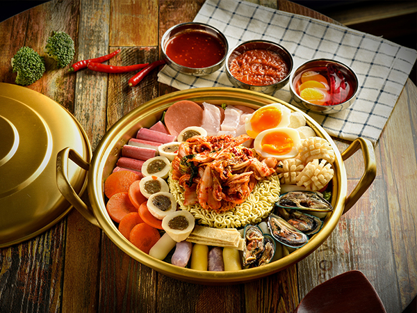

WELCOME TO FOODY PANDA BLOGSCONTACT ME |
There must be a lot of tourists to South Korea who have listed South Korean food as an important part of plans for travel. From well-known kimchi, barbecue, bibimbap, kimbap,ramyeon to the well-known raw beef, sauce crab, and various hot pots and soups, which are strongly interested in tourists to South Korea. South Korea has its own national characteristics in eating habits and etiquettes. Learn about South Korean food culture makes you better enjoy South Korean food. How to learn about South Korean food culture? Knowing cuisine features, eating habits and eating etiquettes of South Korea makes you better understand the food culture in South Korea.
Similar to China, the most basic food in South Korean food is rice. In the food culture of South Korea, rice is the main food, supplemented by meat, fish and vegetable side dishes to maintain a balanced diet. South Korean rice is close to rice in Northeast China, has a high viscosity and is delicious. It is used to make steamed rice, porridge and fried rice. In addition to rice, pasta made from grains such as wheat or buckwheat also has an important place in the diet of South Koreans.
Many South Korean dishes look hot and spicy, and the one that plays an important role is chili. Raw chili, paprika, etc. are all spices that are often used in cooking. In addition, the use of a lot of spices such as garlic and ginger is also a major feature of Korean cuisine. Perhaps from the high consumption of South Korean garlic, it can be seen that South Korean cuisine helps to strengthen physical strength.
In South Korea, soy sauce and soybean fermented food are widely used as basic seasonings. Soybean is used as raw material, and fermented foods include chili sauce made of chili powder, etc.
After ordering food in a South Korean restaurant, the clerk will send a variety of side dishes such as kimchi and side dishes. Unlike in some countries, these side dishes are all free! In addition, you can add side dishes with unlimited times. This is originated from the habit of South Koreans think that they should provide rich ingredients for the guests.